大家好，我是郑同学。新系列《dsh 插件探险》开更：每篇拆一个社区插件，固定四段——接入、使用、截图切图看功能、源码简单分析大概实现，篇幅不贪长。第一篇选使用热度第一的：dsh-context，npm 周下载 3.2 万，是整个生态装机量最大的插件。它解决一个所有人都遇过的问题：agent 干着干着变笨、开始忘事——上下文被吃光了，但你不知道被谁吃的。dsh-context 给上下文开了一个仪表盘：现在窗口里装了什么、每次请求长了多少、压缩那一刀剪在哪里，全部可视。
● ● ●
本机实录（临时 profile，没动我的 web；dsh 迭代快，本文数字基于 v0.1.1-rc.2，跑数对不上先看版本）：
$ dsh plugin --profile ctxep01 add dsh-context
Progress: resolved 1, downloaded 1, added 1, done
Done in 696ms using pnpm v11.24.0
不用构建、不用重启——装完直接 dsh web，热重载接管（源码篇 EP04 拆过的机制：patch 文件一保存，树重新叠一遍）。落盘的改动后面第五节用 dump 逐行看。
● ● ●
Context 标签页：打开任意会话，点「Context / 上下文」tab——仪表盘本体。/context 命令：聊天框里敲 /context 回车，居中弹窗显示同样的组成条和浏览器，不用离开对话。设置页还会多一张偏好卡（趋势粒度、排序默认值），存在你自己的 settings 里，不进配置文件。
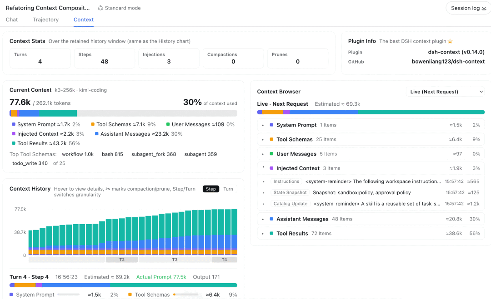
图：Context 标签页总览：统计、六色组成条、趋势图同屏（dsh-context 官方仓库截图）
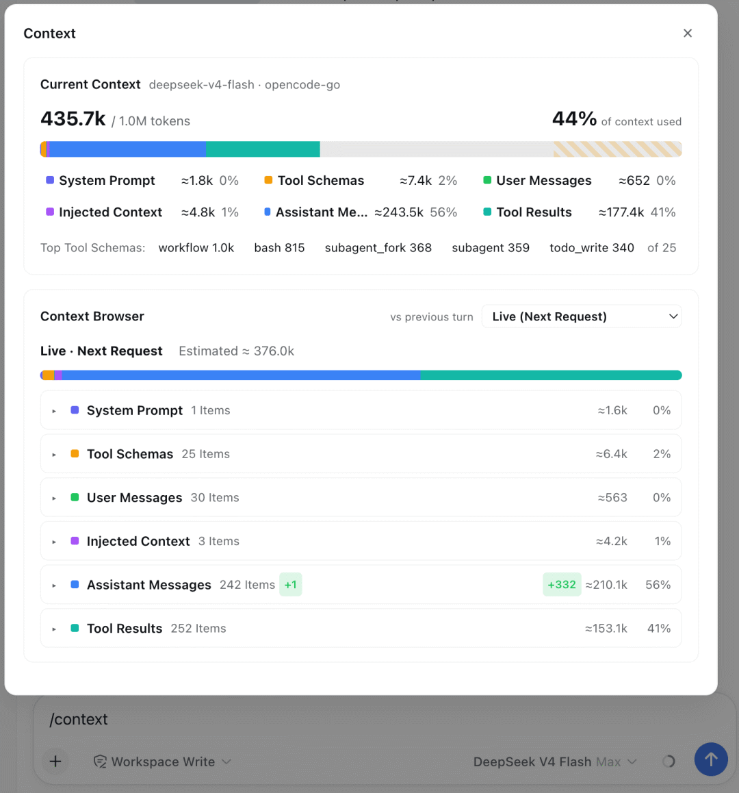
图：聊天里敲 /context：不离开对话的组成条与浏览器弹窗（dsh-context 官方仓库截图）
● ● ●
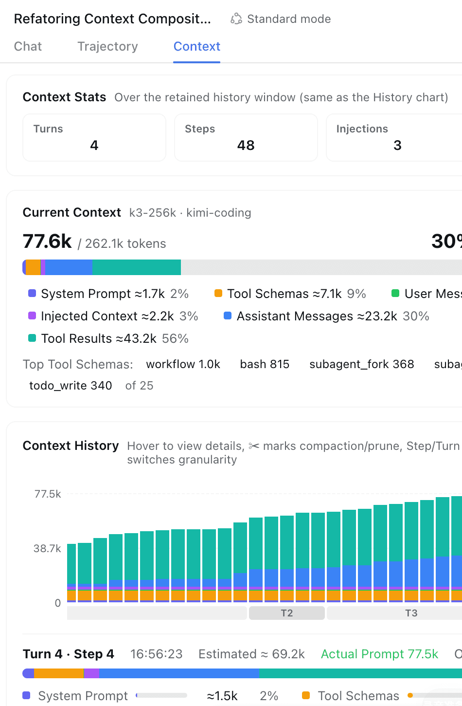
图：组成条特写：统计数字 + 六色条 + 图例（切图特写，dsh-context 官方仓库）
组成条：一根按模型全窗口等比的六色条——系统提示词、工具 schema、你的消息、注入上下文、模型回复、工具结果各占一色，灰色轨道是剩余余量；旁边给出最贵的 Top5 工具 schema。对话开始退化时，这里一眼看出哪一块吃掉了预算。数字与聊天输入框的上下文环同源（后面实现段讲为什么）。
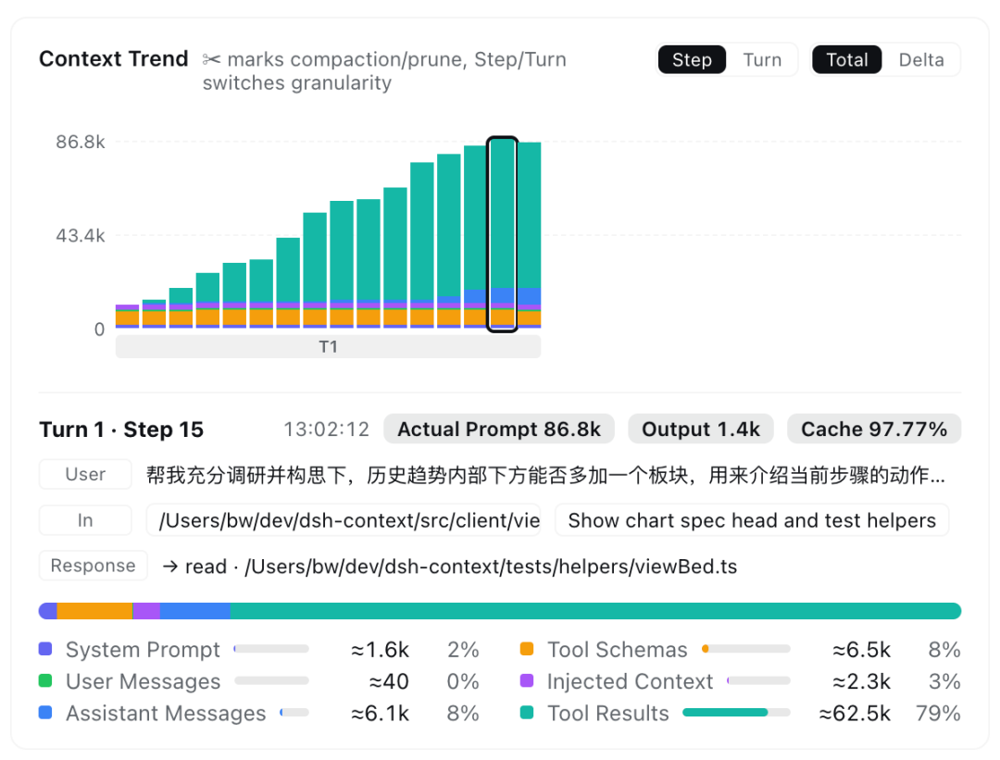
图：趋势图：每请求一根柱 + 步骤简报三行（dsh-context 官方仓库截图）
趋势图：每个模型请求一根堆叠柱（比按消息更细），压缩发生的位置打一个 ✂
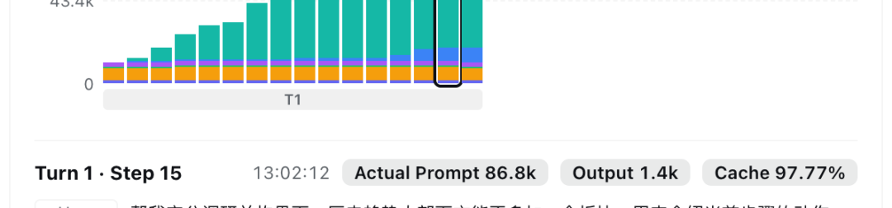
——窗口断崖式下降的那一刀，自己会解释自己。可切 Delta 模式：每根柱变成这次请求的增减量，+803 注入、+649 你的消息、+178 回复，谁加的一目了然。柱下三行「步骤简报」：这步是谁开的、新进了什么、模型回了什么。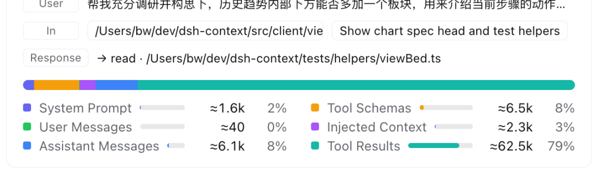
一个真实长会话的戏剧版本——56.3 万 token 积到 48 轮，一刀压缩回收 53.5 万，对话从干净的小窗口继续：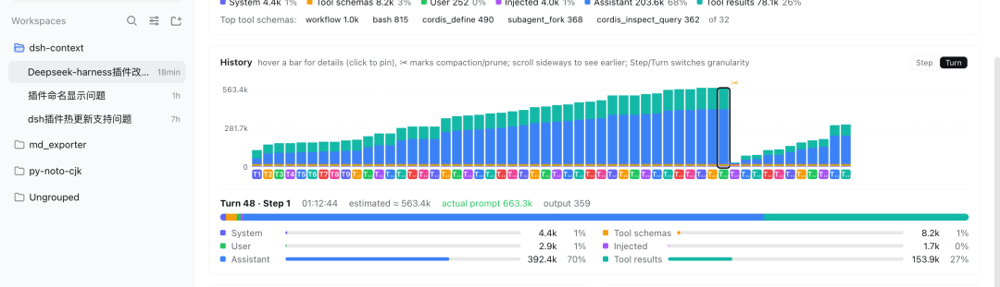
图：✂ 压缩断崖特写：53.6 万 → 小窗口，一刀回收 53.5 万（切图特写，dsh-context 官方仓库）
事件流：每一次注入、压缩、修剪、切模型、切模式的记录，带生产者（哪个 skill、哪个插件、哪个指令文件）、token 增减和轮次归属。
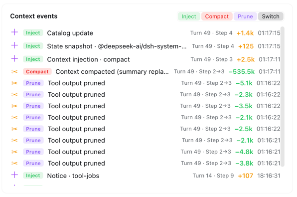
图：事件流：Inject / Compact / Prune / Switch / Mode 各类事件与影响（dsh-context 官方仓库截图）
文件活动：agent 对每个文件读过几次、写了几次、搜到几次，加减行数估算，失败红点；点开是该文件的全部操作日志。
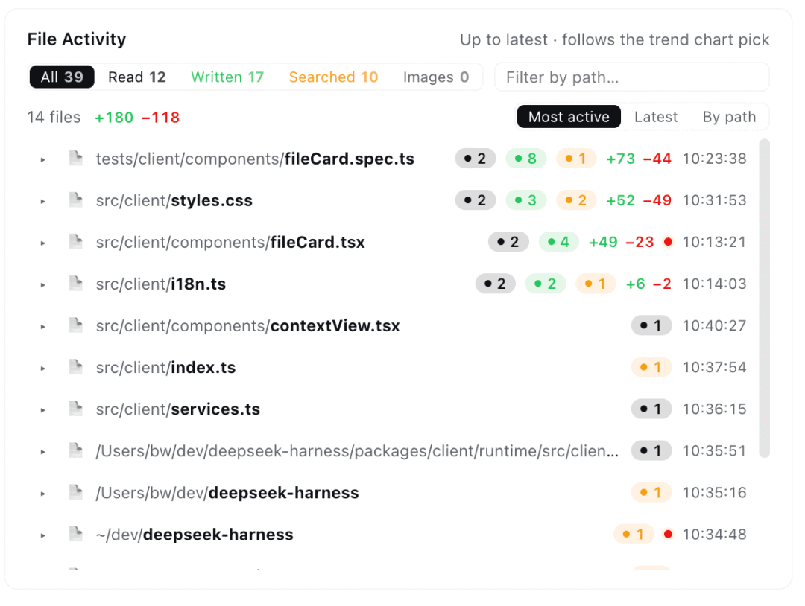
Agent 网络：当前 agent、父辈和它派生的全部子 agent 一张活地图，每个节点的环就是那个 agent 自己的上下文占用。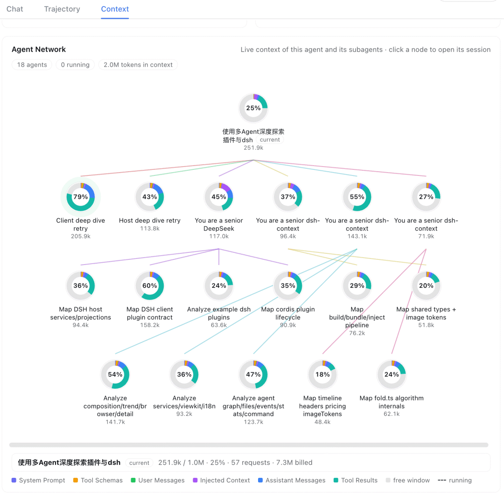
上下文浏览器：任选一次请求（含「下一次实时」），看它实际由什么拼成——系统提示词全文、每个工具的 schema 和来源标签（哪个插件注册的）、每条消息的 token 价格，点开就是原文。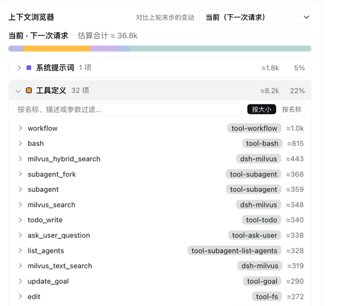
图：工具来源标签特写：每个 schema 标注注册它的插件（切图特写，dsh-context 官方仓库）
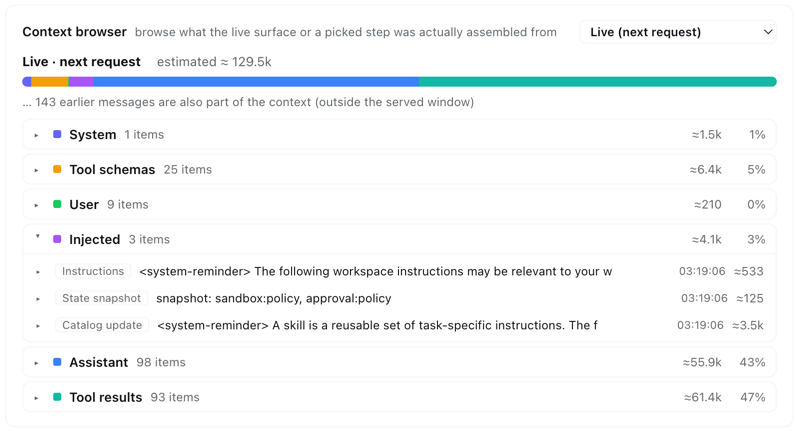
图：上下文浏览器：任一次请求的实际拼装清单（dsh-context 官方仓库截图）
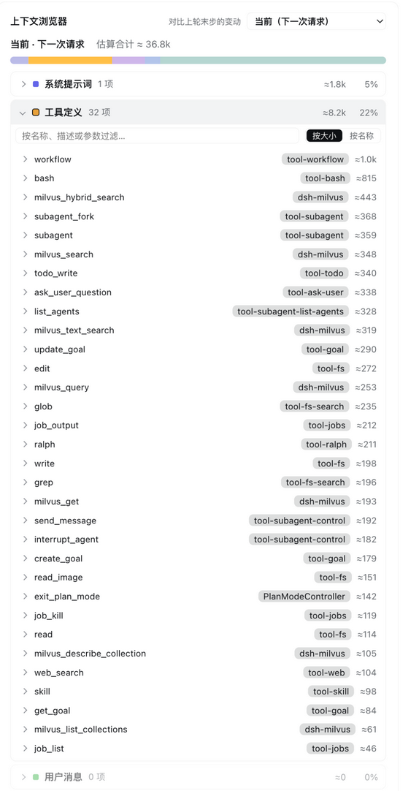
图：工具 schema 带来源标签：哪个插件注册的，按大小排序（dsh-context 官方仓库截图）
● ● ●
看 package.json 的 dsh 字段，双半结构一目了然：
{
"dsh": {
"bundle": { "patch": "./cordis.patch.yml" },
"client": {
"platform": "web",
"inject": [
"@deepseek-ai/dsh-client-connection",
"@deepseek-ai/dsh-client-locale",
"@deepseek-ai/dsh-client-runtime",
"@deepseek-ai/dsh-client-ui-conversation",
"@deepseek-ai/dsh-client-ui-settings"
]
}
}
}
host 半是普通 Cordis 插件（src/host 十个文件）：timeline.ts 从会话日志投影出每次请求的组成；fold.ts 处理压缩后历史的近似重建；pricing.ts 做 token 估价——数字与输入框的上下文环完全一致，因为它读的就是官方 token-meter 的同一份投影（contextPressure / contextBreakdown），不自己发明算法；attribution.ts 给每个工具 schema 标来源——监听 tools.register() 调用，把工具归属到注册它的插件。client 半是浏览器 bundle（src/client 二十四个文件），通过 dsh.client.inject 声明搭上 web 前端的五项客户端服务：conversation 管会话页 tab、settings 管偏好卡、runtime/locale/connection 管运行时与连接。shared/ 放两端共用的类型和图片 token 换算。
● ● ●
用源码篇 EP03 的方法，装前装后各跑一次 dump：
$ dsh --profile ctxep01 --dump-config | grep -c '^- id:'
78 ← 装前
$ dsh plugin --profile ctxep01 add dsh-context
$ dsh --profile ctxep01 --dump-config | grep -c '^- id:'
79 ← 装后
$ diff 装前.txt 装后.txt
> # == dsh-context
> - id: dsh-context
> name: dsh-context
树上恰好多一行，来源注释自己带——内核 78 行一行未动，组合、界面、命令全是增量。盘上同步变化的只有两处：profile 的 package.json 多一个依赖和 bundle 项；cordis.patch.yml 里多那一行 insert。web 端的可见变化：会话页多一个 Context tab、slash 菜单多一条 /context、设置页多一张卡——全部由 client 半注入的五项服务实现，不碰 web 源码。
● ● ●
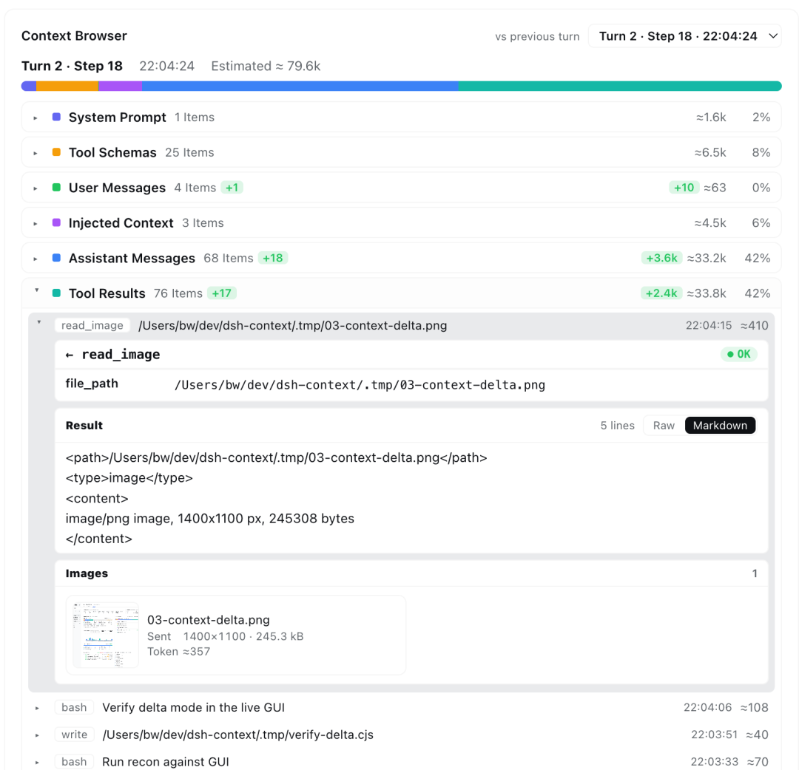
图：工具结果展开：参数、状态、Raw/Markdown 切换与图片渲染（dsh-context 官方仓库截图）
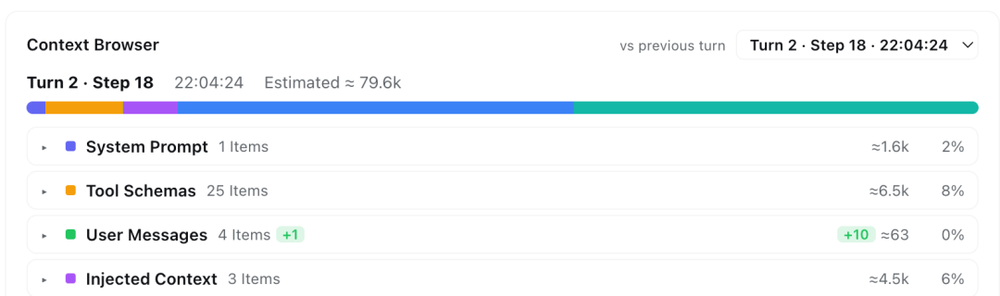
图：调用头特写：工具名、参数、OK 状态、Raw/Markdown 切换（切图特写，dsh-context 官方仓库）
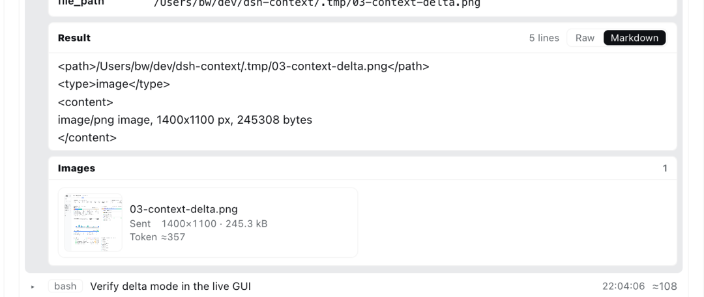
图：图片载荷特写：缩略图卡 + 尺寸 + 估算 token（切图特写，dsh-context 官方仓库）
● ● ●
| 疑问 | 去哪看 |
|---|---|
| 窗口怎么就满了 | 组成条 + Top5 工具 schema |
| 哪一步吃掉的 | 趋势图 Delta 模式 + 步骤简报 |
| 压缩剪掉了什么 | ✂ 标记 + 事件流的净回收量 |
| 工具 schema 太贵 | 浏览器的工具来源标签 + 按大小排序 |
| 子 agent 各自背了多少 | Agent 网络的每节点占用环 |
一句话收拢：装的是增量，开的是视野，账一直都在——树上那一行换来的是整个上下文的可见性。下一篇按使用方向接着走：模型一多就该管路由了——dsh-routing-suite，star 6.9k 的注入器加路由器，按任务自动切换思维模式（它管提示词层，不选模型）。